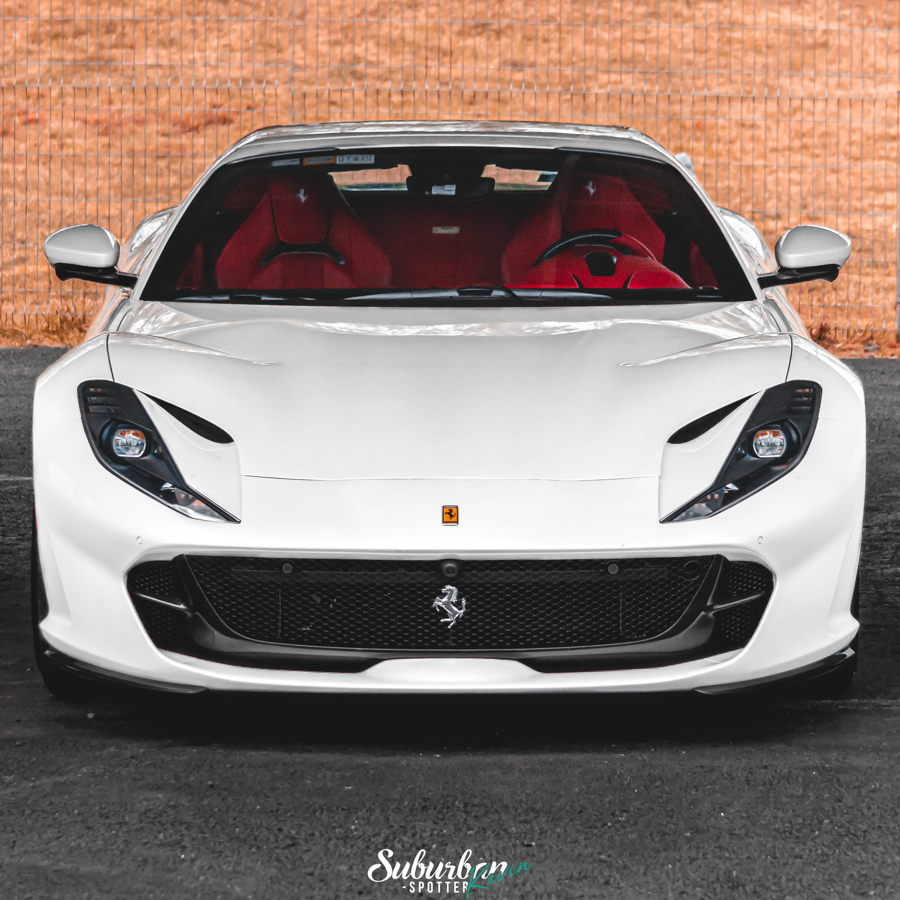

Con más de 5 años de experiencia en el mundo automotor, nos especializamos en fotografía profesional de autos deportivos, resaltando cada detalle, potencia y elegancia. Desde sesiones personalizadas hasta cobertura de eventos, convertimos la velocidad y el diseño en arte visual. Cada imagen cuenta una historia, y mi misión es inmortalizar la esencia de cada vehículo. Si buscas fotografía automotriz que exalte la belleza y la esencia de los autos deportivos, aquí encontrarás la combinación perfecta entre arte y velocidad.